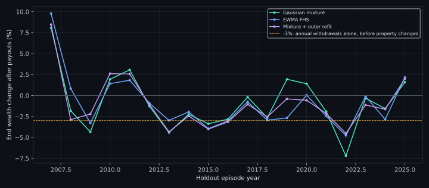

Better foundations.
No shortcut to a safety claim.
Finite-moment scenarios, a separate all-risk judge, an executable cash-first audit and matched historical tests are now in place. These tests show where the model fails as well as where it passes.
The configured rule allows a 20% tail-shortfall budget. In a counterfactual $95M final call, a cash-plus-property portfolio can pass that allowance while missing $5M on every path because the fixed property is unsold. This is a limit of the chosen rule, not a changed commitment or the default $3M schedule.
Fix the meaning before comparing the numbers.
Model and risk
- Unbounded log-Student-t was replaced in the default by an explicit Gaussian variance mixture. Price moments are finite; parameters remain development choices.
- A final funding pass no longer means an all-risk pass. Every payment, path/terminal loss, holdings and finite posterior hull are checked on frozen final scenarios.
- Unvalidated stochastic calls are disabled. Final edited inputs meet one validation boundary.
Accounting and robustness
- Cash-first sales are recorded in a separate units/cash ledger. A hand example produces 98 versus 100 under provisioning. The optimizer has not been relabelled a dynamic trading policy.
- The W1 metric is invariant to splitting an identical sleeve and repeating dates. The radius is still uncalibrated.
- Property annual dispersion uses four-quarter sums including serial covariance. Weekly dependence remains assumed.
A fair comparison can still be inconclusive.
Each method gets the same fixed validation and final judge, holdings constraints and cash-anchor calibration choices. The judge model is the Gaussian mixture, even for FHS-trained candidates. FHS is therefore not graded against a friendlier self-created truth. Final results never trigger a repair.
Higher-fidelity pilot: 800 training /1200 validation /2400 final scenarios,8 batches. Outer-refit and FHS pilots use 200 /400 /800 with4 batches. The values below are conditional cash-ledger certainty equivalents, not expected wealth or established economic performance.
Annual episodes include 2008, 2020 and 2022.
Fit uses only past ETF/FX rows and property quarters available under an assumed 45-day release lag. All policies face identical future history and the same cash-first rule. Capital resets to $100M each episode; there are $3M scheduled withdrawals. These are not compounded strategy returns. Negative wealth change includes the withdrawals, not just investment loss.

Crisis dates were chosen as descriptive stress episodes, not as an independent confirmation set. Latest data vintages can revise the past. Zero missed payments with large cash holdings and a 3% withdrawal schedule is not strong tail-risk evidence.
Numerical success is not a statistical pass.
The reduced matrix is fixed in advance, not searched for the best-looking result. A radius 0.00004 implies an unavoidable $80,000 sufficient funding buffer on$100M, above the $50,000 per-payment budget. The engine reports that conflict instead of relaxing risk checks.
Make the gap between a risk budget and full payment visible.
These are declared counterfactual schedules, not user obligations. The $3M default is unchanged. Funding allows tail shortfalls equal to 20% of each payment; it is not a minimum probability of making all payments. The same cash-first ledger audits each candidate independently.
A $60M early call plus $30M final call makes every payment on only about 84% of reference paths in a candidate that passes the declared model limits. The $95M example can pass with near-universal missed payments. A strict paid-in-full requirement would need a different funded-policy specification, not friendlier labels or thresholds.
What still prevents a stronger claim.
- Private research, not a recommendation.
- Conditional simulated judge is not economic truth.
- Annual episodes reset capital, include3% scheduled withdrawals and do not form a compounded strategy.
- Latest data vintages, assumed 45-day property release lag, not revision-safe point-in-time archives.
- Cash earns0% by explicit uncalibrated assumption.
- Listed sales assumed immediately spendable within each week.
- W1 radius remains uncalibrated. Ledger is not W1-certified.
- Separate quarterly bootstrap refits property dispersion, but does not estimate joint cross-frequency dependence.
Next useful work: genuine point-in-time property vintages and publication calendars, calibrated cash carry and sale settlement, joint quarterly property/ETF/FX dependence, more outer replications and prespecified rolling radius selection. Dynamic-policy optimization is a separate model extension, not a cosmetic ledger change.
Method sources: stationary/block bootstrap, portfolio estimation-risk research, Wasserstein/Lipschitz bounds, and FHS authors plus Federal Reserve cautions. See the accompanying source ledger and machine-readable evidence. No source code was copied from the cited papers.
Method sources
- Michaud & Michaud: estimation error and portfolio resampling. Motivation for outer refits, not a universal benefit claim.
- Stationary-return portfolio estimation-risk research. Dependent returns need more than iid parameter draws.
- Politis & Romano: stationary bootstrap. Geometric-length blocks; stationarity assumptions remain a limitation.
- Esfahani & Kuhn: Wasserstein data-driven robustness. Sufficient transport bounds do not validate an arbitrary chosen radius.
- FHS authors: methodology and history. Our EWMA variant is not a fitted GARCH replication.
- Federal Reserve: Hidden Dangers of Historical Simulation. Changing correlations and short tail samples can defeat apparent robustness.